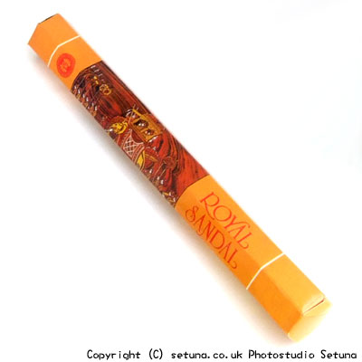

「あ、これ、家の仏壇で使ってるのと似てる。」
と思う方もいらっしゃるかもしれませんね。
日本人には割とおなじみの「お線香」に近い感じの匂いがします。
焚き始めると爽やかなサンダルのまるい感じの匂いがゆっくりと部屋にふくらんでいきます。
そして部屋いっぱいに広がって、そのままの香りがしばらく続いていきます。
焚き終わりになるとそのまるいふくよかさがゆっくりと少しづつ薄れていくといった感じでしょうか。
香りが消える直前に花のような匂いがしてフッと消えます。
その瞬間に私はいつも蓮の花が見えるような気がするのですが・・・。
「上品できちんとした感じ」のお香ですね。
